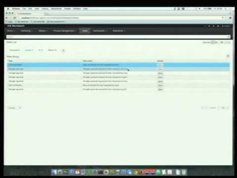

Knowledge Driven Microservices
In the area of microservices more and more people are looking into lightweight and domain IT solutions. Regardless of how you look at microservice the overall idea is to make sure it does isolated work, don’t cross the border of the domain it should cover.
That way of thinking made me look into it how to leverage the KIE (Knowledge Is Everything) platform to bring in the business aspect to it and reuse business assets you might already have – that is:
That way of thinking made me look into it how to leverage the KIE (Knowledge Is Everything) platform to bring in the business aspect to it and reuse business assets you might already have – that is:
- business rules
- business process
- common data model
- and possibly more… depending on your domain
In this article I’d like to share the idea that I presented at DevConf.cz and JBCNConf this year.
Since there is huge support for microservice architecture out there in open source world, I’d like to present one set of tools you can use to build up knowledge driven microservices, but keep in mind that these are just the tools that might (and most likely will) be replaced in the future.
Tools box
jBPM – for process management
Drools – for rules evenalutaion
Vert.x – for complete application infrastructure binding all together
Hazelcast – for cluster support for distributed environments
Use case – sample
Overall use case was to provide a basic back loan solution that process loan applications. So the IT solution is partitioned into following services:
- Apply for loan service
- Main entry point to the loan request system
- Allow applicant to put loan request that consists of:
- applicant name
- monthly income
- loan amount
- length in years to pay off the loan
- Evaluate loan service
- Rule based evaluation of incoming loan applications
- Low risk loan
- when loan request is for amount lower that 1000 it’s considered low risk and thus is auto approved
- Basic loan
- When amount is higher than 1000 and length is less than 5 years – requires clerk approval process
- Long term loan
- When amount is higher than 1000 and length is more that 5 years – requires manager approval and might need special terms to be established
- Process loan service
- Depending on the classification of the loan different bank departments/teams will be involved in decision making about given loan request
- Basic loans department
- performs background check on the applicant and either approves or rejects the loan
- Long term loans department
- requires management approval to ensure a long term commitment can be accepted for given application.
Architecture
- Each service is completely self contained
- Knowledge driven services are deployed with kjar – knowledge archives that provide business assets (processes, rules, etc)
- Services talks to each other by exchanging data – business data
- Services can come and go as we like – dynamically increasing or decreasing number of instances of given service
- no API in the strict sense of its meaning – API is the data
More if you’re interested…
Complete presentation from JBCNConf and video from DevConf.cz conference.

Presentation at DevConf.cz
In case you’d like to explore the code or run it yourself have a look at the complete source code of this demo in github.

{kind=link}
{kind=link}